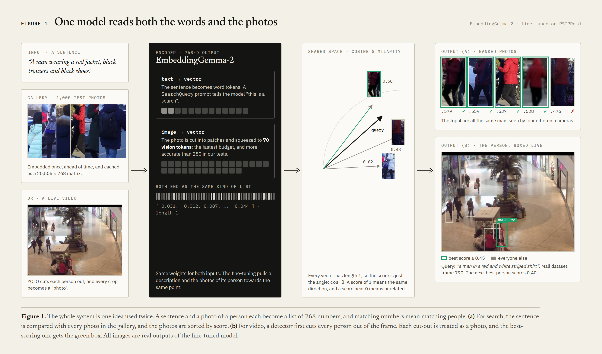

Every step answers three questions: what was done, when in the project it happens, and why it was done that way and not some other way. Wherever a technical word first appears, a box called “In simple words” explains it without jargon.
Cameras record thousands of people an hour. When someone is lost or needs to be found, nobody has a photo of them to search with, only a description.
This task is called text-based person retrieval. The input is a sentence such as “a woman with long black hair in a white coat and blue jeans”, and the output is a ranked list of person photos with the best match first. A second version of the same task works on video: the input is a sentence and a live camera feed, and the output is a box around the right person in every frame.
The project uses the public RSTPReid dataset: 20,505 photos of 4,101 different people taken by 15 street cameras. Each photo comes with two English descriptions written by two different people.
| Split | People | Photos | Used for |
|---|---|---|---|
| train | 3,701 | 18,505 | teaching the model |
| val | 200 | 1,000 | picking the best saved version during training |
| test | 200 | 1,000 | the final, reported grade. It is touched only once |
Why split by person? If the same person appeared in both training and testing, the model could memorise their face and clothes, and the test would look easier than real life. Because nobody in the test set was ever seen during training, the test measures the real skill: finding strangers.
The model is Google's EmbeddingGemma-2. It does one thing: it turns a piece of text, or an image, into a list of 768 numbers. The same model handles both kinds of input.
Every list of 768 numbers is scaled to length 1, which is called L2-normalised. Two such lists can then be compared by the angle between them. The cosine of that angle is 1 when they point the same way, 0 when they are unrelated, and negative when they point apart. Ranking a gallery means computing one cosine per photo and sorting.
| Setting | Value | Why |
|---|---|---|
| Number format | bfloat16 | Uses half the memory of normal 32-bit numbers, so the model runs fast on the GPU. The other 16-bit format, float16, is not supported by this model. |
| Text prompt | SearchQuery | The model was trained to treat text differently depending on the job. This prompt tells it “this sentence is a search”, which ranks better than plain text. |
| Vision tokens | 70 | An image is cut into small pieces called “tokens”. The model allows 70 to 1,120 tokens. Person crops are small and blurry, so 70 was both the fastest and the most accurate in the sweep (280 was the worst). |

TBPR_ex.ipynbYou cannot know if training helped unless you know where you started. So the first experiment uses the model exactly as Google released it.
outputs/image_embeddings.npy. This takes about 15 minutes. Why save them? Photos don't change, so there is no reason to recompute them for every search. The website reuses this file.SearchQuery prompt.| Zero-shot, test split | Rank-1 | Rank-10 | mAP |
|---|---|---|---|
| 280 vision tokens | 35.5 | 70.0 | 25.0 |
| 70 vision tokens | 40.1 | 75.4 | 28.8 |
What this taught us. Out of the box, the model already finds the right person first 40% of the time among 1,000 photos, which is a real but modest skill. Searching the whole dataset (20,505 photos) drops Rank-1 to 10%. Re-running with random galleries of growing size showed why: Rank-1 falls steadily from 46% at 250 photos to 10% at 20,505. The task gets harder with more people to confuse, not because some photos are worse.
| Grade | Question it answers | Plain example |
|---|---|---|
| Rank-1 | Is the first photo the right person? | The guard points once. Right or wrong? |
| Rank-5 / Rank-10 | Is the right person among the first 5 / 10? | The guard shows a short list, and the parent spots their child. |
| mAP | Are all photos of that person near the top? | Not just one sighting: every camera that saw them. |
| mINP | How deep is the hardest photo of that person? | The one blurry, dark sighting. Is it still found? |
The test runs each of the 2,000 test descriptions against the 1,000 test photos (protocol A). Every grade is an average over those 2,000 searches. All grading code lives in one shared file, tbpr.py, so the zero-shot and fine-tuned notebooks are graded in exactly the same way.
TBPR_finetune.ipynbThe original model learned from general images and text on the internet. It has never been told that “dark red hooded top” and a blurry street crop of a red coat are the same person. Fine-tuning shows it 37,010 examples of exactly that.
Each step takes 128 (sentence, photo) pairs. For each sentence, the correct photo is the one it was written for, and the other 127 photos are wrong answers. The model is rewarded for giving the right pair the highest score in its row. The same test is then run the other way: each photo must pick its sentence. This is contrastive learning, using CachedMultipleNegativesRankingLoss.
Each person has about five photos. In a random batch of 128, the same person sometimes appears twice, and the loss would then call a correct match “wrong”. A small custom sampler, UniquePersonBatchSampler, builds every batch from 128 different people. Why it matters: without it the model would be punished for being right, which slowly teaches it the wrong thing.
The loss is also applied to the first 512, 256 and 128 numbers of each vector on their own (MatryoshkaLoss). The model learns to put the most useful information first, like Russian nesting dolls. Why: a 256-number index is 3× smaller and faster, and after fine-tuning it loses only about one Rank-1 point.
| Setting | Value | Why |
|---|---|---|
| learning rate | 2e-5 | Small steps, so the model improves at this task without forgetting what it already knows. |
| warm-up | first 10% of steps | Starts even gentler, because the first updates are the noisiest. |
| epochs | 3 (≈ 33 min each) | The validation grade stops improving after epoch 1, so more epochs would only waste time. |
| model selection | best val mAP | The test set is never used to choose, so the final grade stays honest. |
| GPU memory | ≈ 18 GB | It fits on one RTX 3090 (24 GB). |
Fine-tuning nearly doubles every grade. 678 test searches moved up to first place, and 51 dropped out of it. The right person is now in the top 10 for 93% of searches.
Why it works: measured on six unseen test people, before training a sentence was about equally close to everyone (0.73 to its own person, 0.66 to others). After training, the gap is wide (0.51 against 0.12). That wide gap is what lets a single threshold separate the right person from the crowd in video later.
demo/server.pyA small web server, written with Python's built-in HTTP library and no web framework, loads the fine-tuned model and the pre-computed photo embeddings. When you type a sentence, it encodes only that sentence (a few milliseconds), scores it against all photos with one matrix multiplication on the GPU, and returns the top 5.
GET /api/example a random test description and its person id
POST /api/search {query, gallery: "test" | "all"} → top-5 photos + scores
GET /imgs/<name> only names that exist in the dataset
demo/track_person.pyThe model only understands photos of single people. Video is turned into exactly that: a stream of single-person photos.
| Stage | What | Why this choice |
|---|---|---|
| Detect | YOLO26s, “person” class only | Small and fast, and it finds where people are so that the language model only looks at people. |
| Track | ByteTrack gives each person an id | A person keeps their id across frames, so evidence collected over time is not thrown away. |
| Re-encode | each track every 10 frames, in one GPU batch | The person rarely changes in a third of a second. This saves about 90% of the work. |
| Smooth | EMA: e ← 0.7·e + 0.3·new | One blurry crop cannot flip the decision, because the track keeps a running memory. |
| Gate 1 | score ≥ 0.45 | The right person scored 0.45–0.76, while strangers peaked at 0.40–0.42 when that person was absent. Below 0.45, no one gets the box. |
| Gate 2 | box height ÷ width ≥ 1.2 | Training photos are full bodies. Head-only boxes and boxes covering two people score unreliably, so they can never win. |
Speed. About 26 frames per second end to end on 768×576 video, and 55–100 fps once every track is encoded. In the website, a background thread plays the video in real time and skips frames if it falls behind, so the video never slows down. A new sentence takes effect on the very next frame, about 150 ms after the click.
TBPR_mall.ipynbEverything so far was tested on clean, cut-out photos. A shopping mall is the real thing: 13–53 people in each frame, people hiding behind each other, and tiny figures far from the camera.
The Mall dataset (Chen et al., BMVC 2012) has 2,000 frames from one camera. A human put a dot on every head, 62,315 dots in total. There are no names or ids, so it can grade one question exactly: does the detector see the people? The frames were also turned into a video, videos/mall.mp4, which plays in the website.
Each head dot may be matched to at most one person box, and only if the dot sits in the top 45% of that box. The optimal one-to-one pairing is found with the Hungarian algorithm. Matched dots count as hits, unmatched dots are misses, and unmatched boxes are false alarms.
| Detector setting | Precision | Recall | Count error / frame |
|---|---|---|---|
| 640 px, confidence 0.40 (the demo's default) | 97.7% | 39.0% | 18.7 |
| 1280 px, confidence 0.25 | 92.4% | 66.3% | 8.8 |
What this taught us. The language model transfers to a place it never saw: each description finds its shopper among 20–30 people, with best scores of 0.60–0.72. The weak link in a crowd is the detector, because a person who never gets a box can never be chosen. Doubling the detector's input size to 1280 px finds 70% more people.
# 1. measure zero-shot, fine-tune, then stress-test on the mall (each notebook saves its outputs)
.venv/bin/jupyter execute --inplace TBPR_ex.ipynb
.venv/bin/jupyter execute --inplace TBPR_finetune.ipynb # ≈ 18 GB GPU, ≈ 1.7 h
.venv/bin/jupyter execute --inplace TBPR_mall.ipynb
# 2. the website: image search on /, live video on /video
.venv/bin/python demo/server.py --port 8000 \
--model models/embeddinggemma2-rstpreid --embeddings outputs/finetuned/image_embeddings.npy \
--video videos/*.mp4 --video-query "a man in a red and white striped shirt"
# 3. video in a desktop window (type a new sentence in the terminal + Enter)
.venv/bin/python demo/track_person.py --model models/embeddinggemma2-rstpreid \
--source videos/mall.mp4 --query "a woman in a red coat"
# 4. rebuild the figures in docs/diagrams and this PDF
.venv/bin/python docs/diagrams/build_figures.py
.venv/bin/python docs/diagrams/render.py
.venv/bin/python docs/explainer/build_pdf.py